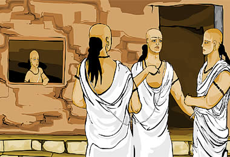

|

As Panini grew up he learned many things about the world around him. He thought about all things and was always learning. He was restless and was not interested in everyday activities. But he played and learned with the other Brahmin children. | |
| ...previous | next... |